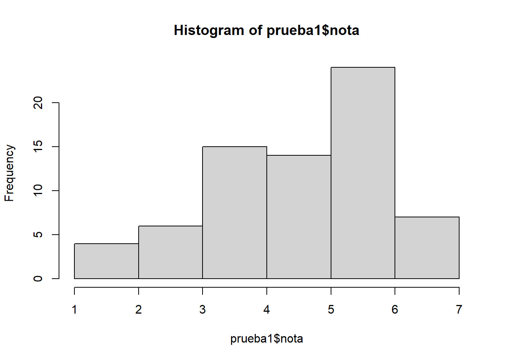

pacman::p_load(tidyverse, sjmisc, sjPlot, kableExtra, sjlabelled, readxl, here)Reporte Notas Prueba 1 - Estadística Correlacional 2024
Prueba 1
Librerías & datos
[1] "Nº" "Persona" "1a" "1b" "1c" "2a" "2b"
[8] "2c" "Puntos" "Nota" Etiquetados
# Label variables
prueba1$p1a <- set_label(x = prueba1$p1a,
label = "Intervalo de Confianza")
prueba1$p1b <- set_label(x = prueba1$p1b,
label = "Error tipo II")
prueba1$p1c <- set_label(x = prueba1$p1c,
label = "Rechazo H0 valor p")
prueba1$p2a <- set_label(x = prueba1$p2a,
label = "Formulación hipótesis")
prueba1$p2b <- set_label(x = prueba1$p2b,
label = "Contraste de prueba t")
prueba1$p2c <- set_label(x = prueba1$p2c,
label = "Intervalo confianza de prueba t")
prueba1$nota <- set_label(x = prueba1$nota,
label = "Nota final")Tabla descriptiva
prueba1 %>% descr(., show = c("label","range", "mean", "sd", "n"))%>% kable(.,"markdown", digits=2)| var | label | n | mean | sd | range | |
|---|---|---|---|---|---|---|
| 2 | p1a | Intervalo de Confianza | 71 | 0.55 | 0.30 | 1 (0-1) |
| 3 | p1b | Error tipo II | 71 | 0.31 | 0.45 | 1 (0-1) |
| 4 | p1c | Rechazo H0 valor p | 71 | 0.81 | 0.69 | 2 (0-2) |
| 5 | p2a | Formulación hipótesis | 71 | 1.47 | 0.68 | 2 (0-2) |
| 6 | p2b | Contraste de prueba t | 71 | 2.59 | 1.31 | 4 (0-4) |
| 7 | p2c | Intervalo confianza de prueba t | 71 | 1.26 | 0.73 | 2 (0-2) |
| 1 | nota | Nota final | 71 | 4.50 | 1.42 | 6 (1-7) |
Gráficos descriptivos
hist(prueba1$nota)
plot_frq(data = prueba1$nota,type = "hist",show.mean = T)
prueba1 <- prueba1 %>% mutate(notas_cat=cut(nota, breaks=c(-Inf,4,5,6, Inf), labels=c("Menor a 4.0","4.0-5.0","5.0-6.0","6.0-7.0")))
frq(prueba1$notas_cat)x <categorical>
# total N=71 valid N=71 mean=2.18 sd=1.03
Value | N | Raw % | Valid % | Cum. %
-------------------------------------------
Menor a 4.0 | 25 | 35.21 | 35.21 | 35.21
4.0-5.0 | 15 | 21.13 | 21.13 | 56.34
5.0-6.0 | 24 | 33.80 | 33.80 | 90.14
6.0-7.0 | 7 | 9.86 | 9.86 | 100.00
<NA> | 0 | 0.00 | <NA> | <NA>prueba1 <- prueba1 %>% dplyr::select(-notas_cat)Preguntas y asociaciones
tab_corr(prueba1,
triangle = "lower")| Intervalo de Confianza | Error tipo II | Rechazo H0 valor p | Formulación hipótesis | Contraste de prueba t | Intervalo confianza de prueba t | Nota final | |
| Intervalo de Confianza | |||||||
| Error tipo II | 0.337** | ||||||
| Rechazo H0 valor p | 0.271* | 0.399*** | |||||
| Formulación hipótesis | 0.180 | 0.202 | 0.014 | ||||
| Contraste de prueba t | 0.243* | 0.244* | 0.214 | 0.485*** | |||
| Intervalo confianza de prueba t | 0.275* | 0.280* | 0.405*** | 0.281* | 0.590*** | ||
| Nota final | 0.453*** | 0.525*** | 0.544*** | 0.592*** | 0.849*** | 0.772*** | |
| Computed correlation used pearson-method with listwise-deletion. | |||||||
plot_scatter(prueba1, p2b, p2c)Consistencia interna
pacman::p_load(ltm)
preguntas <- prueba1 %>% dplyr::select(-nota)
cronbach.alpha(na.omit(preguntas))
Cronbach's alpha for the 'na.omit(preguntas)' data-set
Items: 6
Sample units: 71
alpha: 0.677